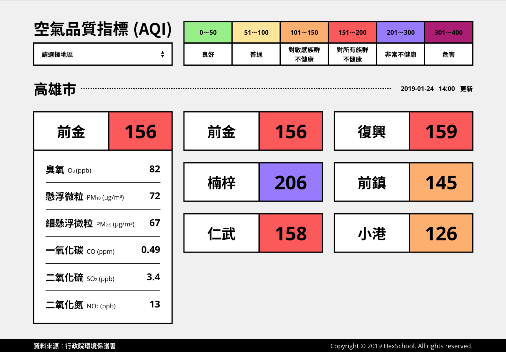

JS地下城：5F-全台空氣指標儀表板

規則
- 【特定技術】必須使用 AJAX 技術串接資料 API，不可直些寫死資料在變數上。
- 【特定技術】上方切換城市(高雄、台北)後，下方會切換該城市的各地區
這次的關卡比較大的問題點就應該就是在 CORS 的問題處理上
畢竟要用前端處理公開 api 這件事，本應由後經由後端處理，前端只要負責串接即可
但因為安全考量，API 端如果沒有開啟 CORS 的話，就變成只能看得到吃不到 RRRRR
選用 vue 來處理這次關卡
將 api 資料撈出來
因為先前在寫另一個 ubike 練習時就遇過CORS這問題了，當時花了近一天的時間才找到答案
可參考 利用 google apps script 做中繼點跨網域遠端取得 api 資料 這篇文章
所以次非常快速的就處理掉這個問題 XDDD
切換區域
我這裡的處理方式 就是先將 API 的縣市 用 filter 篩選出來 將他放到下拉式選單裡做選取值
選到對應的縣市後 再列出縣市區域下去做篩選 做出頁面上的互動效果
底層 XMLHttpRequest、Fetch API 的差異
簡單來說 Fetch 的出現，補足了 XMLHttpRequest 的缺陷
這篇文章寫的還蠻清楚 從 XHR 到 Fetch
XMLHttpRequest 請求方式
1 | var xhr = new XMLHttpRequest(); |
更多介紹 MDN-XMLHttpRequest
fetch 請求方式
1 | fetch(url) |
更多介紹 MDN-Using Fetch
這次選用了 axios 來處理 api 也是 Vue 官方推薦的 ajax 套件
axios github
axios 中文文檔
處理的過程大致上就是這樣囉，如有任何問題歡迎留言給我 也請各位多多請教！！
Donate
如果這整篇文章有幫助到你的話 也歡迎請我喝杯飲料 ^_^